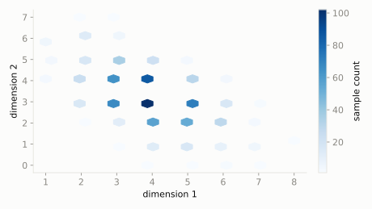

A bag holds 10 red, 8 blue, and 7 green marbles. A kid grabs a handful of 10 marbles all at once, no peeking, no putting back.
What's the chance the handful is exactly 4 red, 3 blue, and 3 green?
scipy.stats.multivariate_hypergeom
Hypergeometric extended to more than two categories: a bag has several colors of marbles, you grab a handful without putting any back, and ask how many of each color you got.
| parameter | default used here | meaning |
|---|---|---|
m | [10, 8, 7] | population count of each category |
n | 10 | sample size drawn without replacement |
A bag holds 10 red, 8 blue, and 7 green marbles. A kid grabs a handful of 10 marbles all at once, no peeking, no putting back.
What's the chance the handful is exactly 4 red, 3 blue, and 3 green?
scipy.statsimport scipy.stats as stats
import numpy as np
dist = stats.multivariate_hypergeom(m=[10, 8, 7], n=10)
print('P(4 red, 3 blue, 3 green):', round(float(dist.pmf([4, 3, 3])), 4))